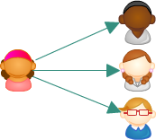

How are we different?
Traditional Models
Traditionally, WebRTC is used for direct peer connections between two parties, where communication is bidirectional.
Common uses include multi-party conferencing using the mesh model, or broadcasting a live stream using the one-to-many model.


conspectio
With Conspectio, you can implement multiple one-to-many broadcasts in the same display for the viewer. Want to show multiple perspectives at a football game? How about different performers at a music festival? Conspectio can help you do that!